I videogiochi
che preferisco.
Gioco a titoli di generi diversi. In questo periodo seguo soprattutto THE FINALS e ARC Raiders.
15 videogiochi visualizzati (elenco completo).
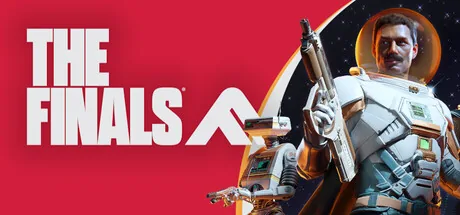
THE FINALS / ATTUALECOMPETIZIONE / SQUADRE ATTUALE
THE FINALS
Sparatutto competitivo a squadre, ambientato in arene parzialmente distruttibili.
ARC RAIDERS / ATTUALE
AZIONE / ESTRAZIONE ATTUALE
ARC Raiders
Sparatutto d’estrazione in terza persona, ambientato in un mondo post-apocalittico.
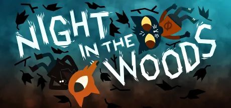
STORIE / PERSONAGGIINDIE / NARRATIVO★
Night in the Woods
Avventura narrativa indipendente, con attenzione ai personaggi e alla storia.
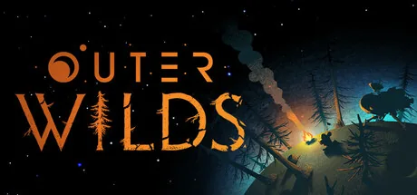
MISTERI / ESPLORAZIONEESPLORAZIONE / MISTERO★
Outer Wilds
Esplorazione spaziale e indagine su un mistero in un sistema solare.
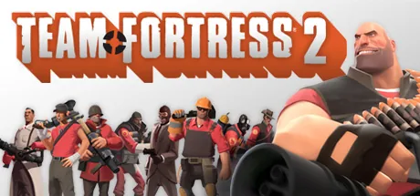
SQUADRE / CLASSIFPS / SQUADRE★
Team Fortress 2
Sparatutto a squadre con classi, obiettivi e modalità diverse.
HORROR / MULTIGIOCATORE★
SCP: Secret Laboratory
Horror multiplayer ambientato nel mondo della SCP Foundation, con ruoli e obiettivi diversi.
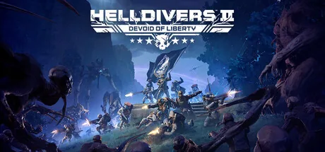
COOPERATIVO / AZIONEFPS / COOPERATIVO★
HELLDIVERS 2
Sparatutto cooperativo in terza persona con missioni svolte in squadra.
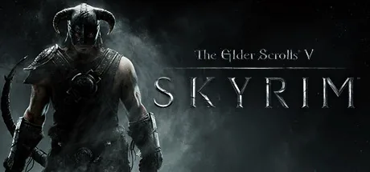
GDR / ESPLORAZIONERUOLO / OPEN WORLD★
The Elder Scrolls V: Skyrim
Gioco di ruolo open world ambientato nella provincia di Skyrim.
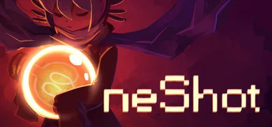
AVVENTURA / ENIGMIINDIE / NARRATIVO★
OneShot
Avventura indipendente con enigmi e una storia che coinvolge direttamente il giocatore.
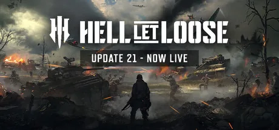
FPS / TATTICOSECONDA GUERRA MONDIALE★
Hell Let Loose
Sparatutto tattico con battaglie su larga scala ambientate nella Seconda guerra mondiale.
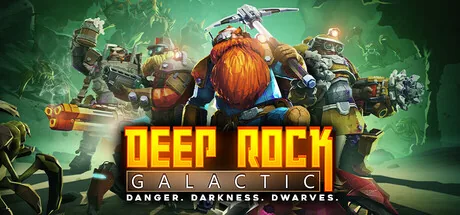
COOPERATIVO / ESPLORAZIONEAZIONE / COOPERATIVO★
Deep Rock Galactic
Una squadra di nani affronta missioni in ambienti sotterranei da esplorare.
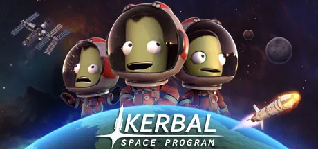
SIMULAZIONE / SPAZIOSIMULAZIONE / INGEGNERIA★
Kerbal Space Program
Simulatore spaziale incentrato sulla progettazione e conduzione di missioni.
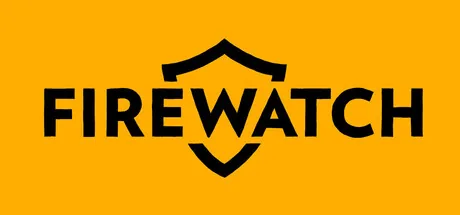
AVVENTURA / NARRATIVAESPLORAZIONE / STORIA★
Firewatch
Avventura narrativa in prima persona ambientata nelle foreste del Wyoming.
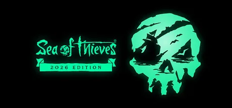
MULTIGIOCATORE / PIRATIESPLORAZIONE / NAVIGAZIONE★
Sea of Thieves
Avventura multiplayer tra esplorazione, navigazione e battaglie navali.
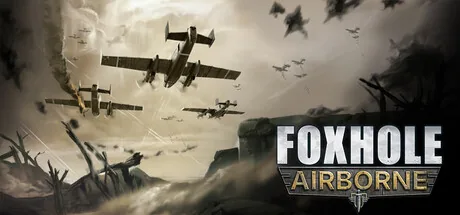
GUERRA / MULTIGIOCATORESTRATEGIA / CAMPAGNA★
Foxhole
Gioco di guerra persistente in cui i giocatori contribuiscono a una campagna collettiva.